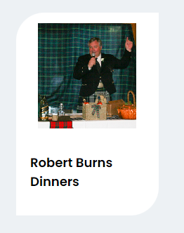
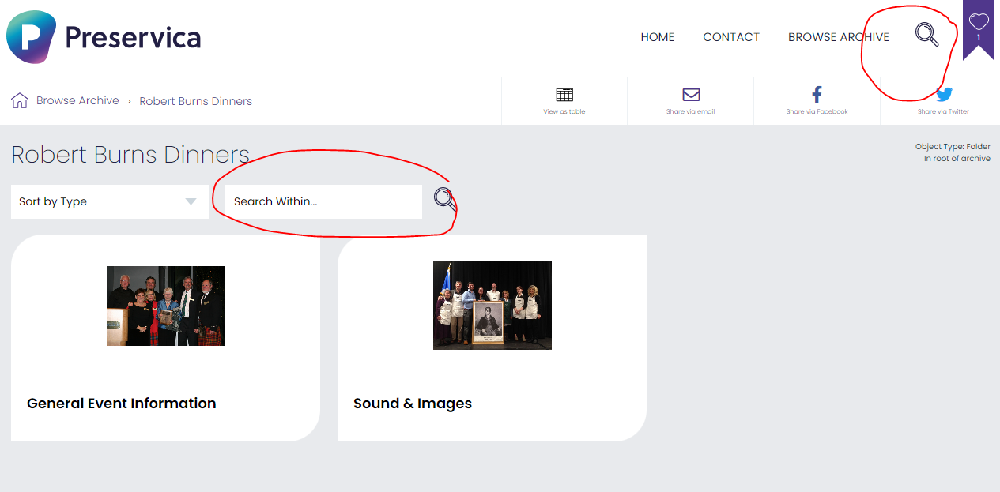
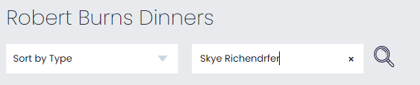
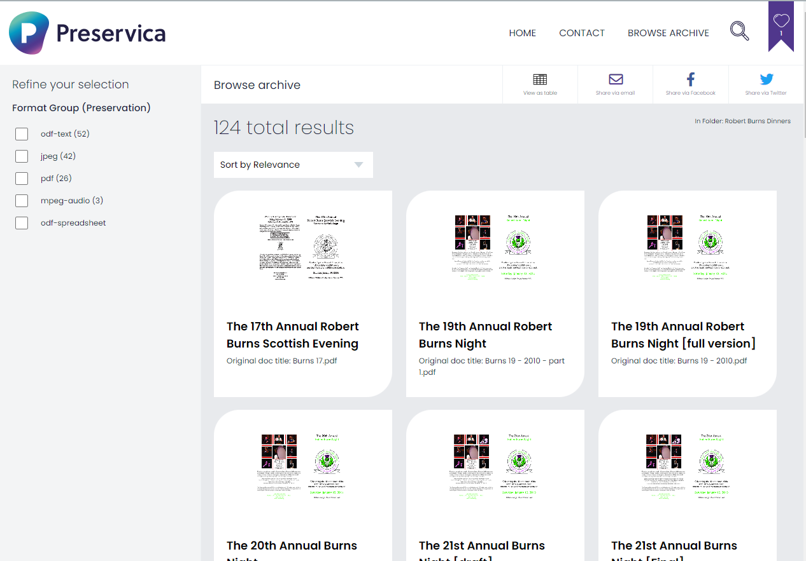
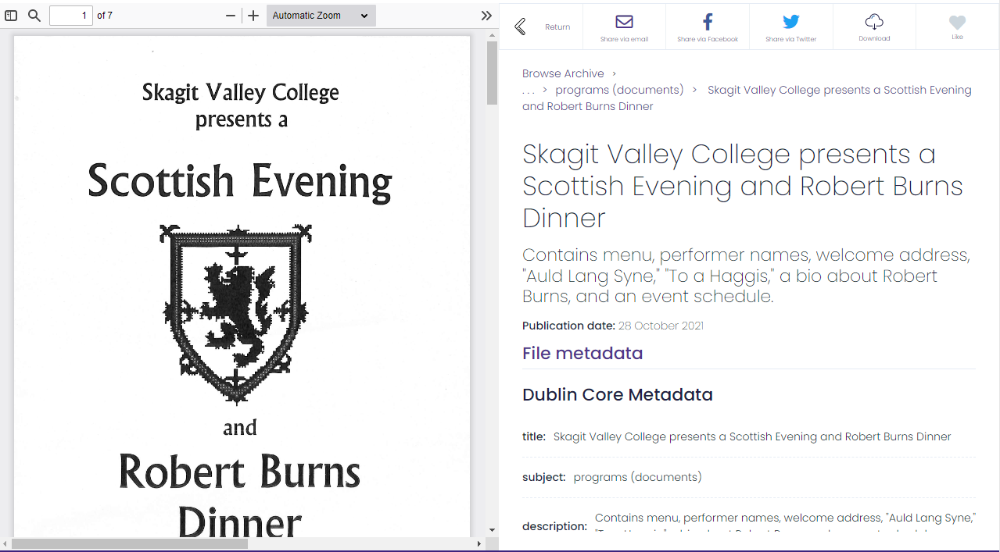
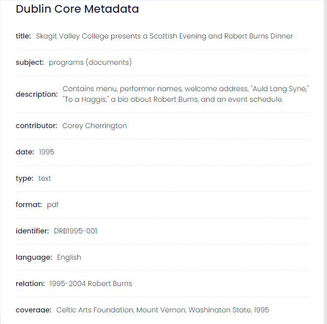
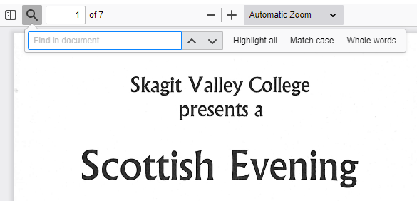
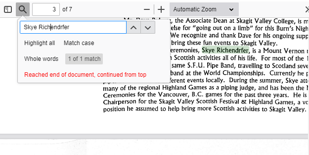

Corey Cherrington's work for the Celtic Arts Foundation
Preservica User Flow
This user flow for the digital archive built in Preservica demonstrates that digitized and born-digital assets in CAF's Preservica are Optical Character Recognition (OCR) capable. It also demonstrates the presence of Dublin Core metadata for assets on the public-facing side of the archive.
1.) The user sees the landing page for the Celtic Arts Foundation (CAF) Archive2.) The user sees the collection that they are interested in and they click the card to visit this collection, the "Robert Burns Dinners" Collection

3.) User is looking for mentions of a specific person in assets from this collection, so they look for a search bar, which they see in two separate locations on the page.

4.) The user elects to use the search bar specifically for this collection, as they want to find items in this collection. They then type the name of the person they are looking for in this collection, "Skye Richendrfer."

5.) Seeing 124 total results on the page, the user peruses for an interesing asset. The decide to click on an asset called "Skagit Valley College presents a Scottish Evening and Robert Burns Dinner."

6.) Once they have clicked onm the asset they wanted to see, the user can view the asset and its associated metadata.

7.) Additional details about the asset can be found in the "Dublin Core Metadata" section. Here, the user learns more about the asset, such as its associated date, 1995.

8.) Curious about where Skye shows up in this asset, the user decides to use the search function within the pdf document.

9.) Because the pdf is OCR capable, the user successfully finds the name they are looking for!
